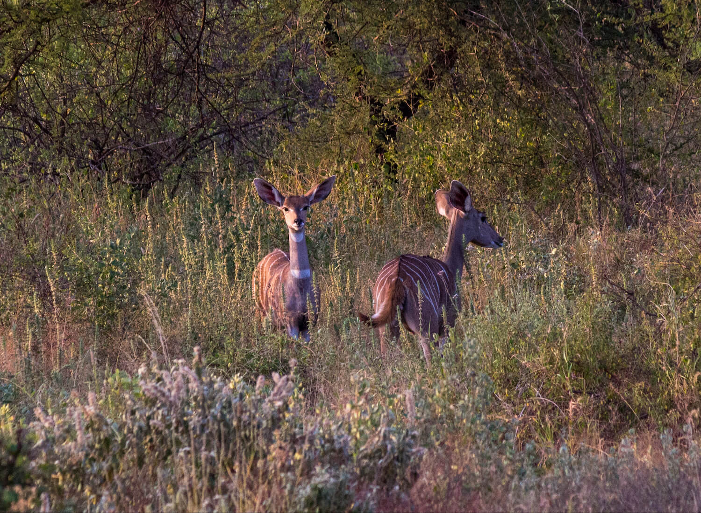
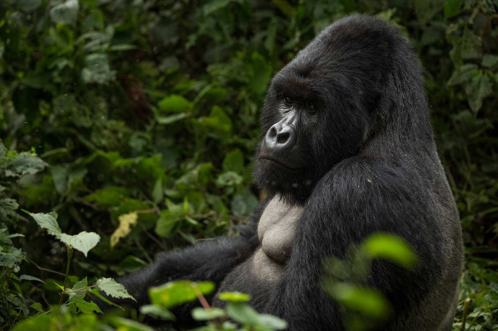
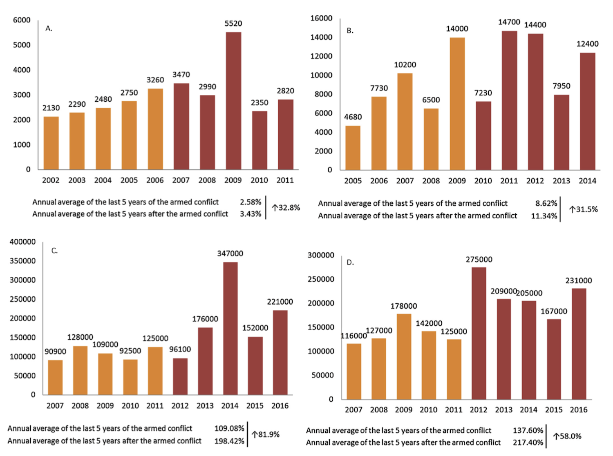
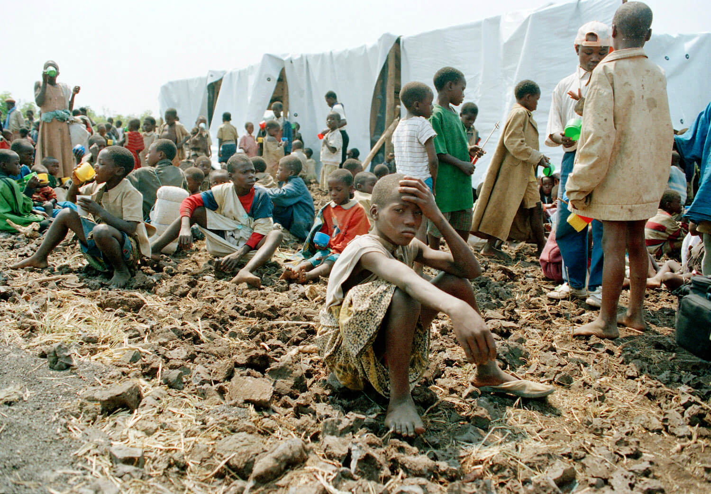

In the last 50 years, over 80% of human conflicts have overlapped with a biodiversity hotspot, despite these areas only taking up 3% of the Earth’s land surface. Currently, 64 of 195 countries that have biodiversity hotspots, have been
listed as areas of priority for conservation efforts.
This may suggest a link between the presence of high biodiversity and the occurrence of resource-based conflicts. According to the IUCN, a biodiversity hotspot is classified as an area which contains at least 1500 endemic plant species and
has lost 70% of its original vegetation to human activity.

The lesser kudu, a forest antelope found in Ethiopia, Kenya, Somalia, South Sudan, Tanzania, and Uganda. | Ray in Manila / Flickr
During times of war, priorities towards protecting biodiversity are displaced by other concerns, such as the deterioration of the socio-economic and political state. There are no measures put in place in order to actively protect wildlife
and natural resources that are located in conflict zones, thus making them neglected casualties of warfare.
Although the immediate, physical impacts of armed conflict on biodiversity are evident, there are few policies and research on how political and economic destabilization increase the exploitation of natural resources and illicit wildlife
trade.
Due to the impacts of artillery, chemical and nuclear warfare, some might assume that conflict is overwhelmingly negative. However, some studies have proposed positive outcomes of warfare on biodiversity, through warzone refugias and
the depopulation of areas due to refugee emigration. Thus, there has yet to be a consensus on whether the relationship between armed conflict and biodiversity is positive or negative.
‘There are no measures put in place in order to actively protect wildlife and natural resources that are located in conflict zones.’
The physical alteration of landscapes and wildlife mortalities caused by artillery, chemicals, and combatants during warfare are fairly clear. However, Gaynor (2016) argues that the most frequent threats to biodiversity stem from
‘institutional and socioeconomic changes associated with conflict, rather than directly from military tactics.’
The destabilization of a governing state can quickly lead further into a collapse of the economy. A deteriorated economy causes the disruption of supply lines and can thus lead to the overharvesting of natural resources—by both combatants
and refugees—placing increased pressure on local flora and fauna.
This was seen in 1994 in the Democratic Republic of Congo, where 850,000 refugees fleeing from the Rwandan war crossed the border and settled around Virunga National Park. There up to 40,000 people harvested around 600 tonnes of forest
products daily in order to survive.

Silverback gorilla male in Virunga National Park, Democratic Republic of Congo. | Joseph King / Flickr
Forest cover loss in conflict zones
According to Dudley (2002), a lead researcher in the field, power vacuums allow high-risk venture capitalist and pirate corporations, who have no regard for environmental sustainability, to move in and exploit natural resources. This was
seen across multiple East African and Southeast Asian late-20th century internal conflicts, where militia groups and armies exponentially increased mining and logging, in order to fund their disputes.
During the Afghan-Soviet war (1979 to 1989), the soviets destroyed Afghan irrigation systems in order to cripple the country’s economic output by 27% to 36%. Afghanistan, previously a self-sufficient agricultural country, resorted to
felling significant portions of the Paktia and Kunar forests to obtain fuel and food. The fragmentation of these vital habitats led to dwindling populations of waterfowls and migratory birds.
‘Annual deforestation was found to be higher in the 5-year post-war period.’
Further case studies in Nepal, Sri Lanka, the Ivory Coast and Peru, observed that despite significant decrease in forest cover during civil conflict, annual deforestation was found to be higher in the 5-year post-war period. It was observed
that the repopulation of the countryside, corrupt forest management, as well as the return of large private corporations post-war, caused this spike in deforestation .
Due to the conflicting consensus, Ordway (2015) imposed a statistical model in order to determine whether conflict drives or hinders deforestation. He compared the impact of ‘conflict induced settlements’, such as refugee camps, and
‘conflict activity’, and found that the former caused more forest loss than the latter.

Four case studies showing forest loss values (Ha) in the 5 last-years of armed conflict and in the 5-year immediately post-conflict. Case studies included the Nepalese civil war from 1996-2006 (Graph A), Sri Lankan civil war
intermittently from 1983-2009 (Graph B), Ivory Coast civil war from 2002-2007 (Graph C) and the Peruvian internal conflict from 1982-1997 (Graph D). | Grima and Singh (2019)
Armed conflict increases the prevalence of illegal wildlife trade
The international market for global wildlife trade is worth $332 billion. Wildlife trade is of higher demand in poorer nations, as exotic animals may even surpass the value of otherwise ‘high-value’ natural resources, such as diamonds, oil,
gold, natural gas and minerals.
Animals are commodities that are sold or traded for weapons, ammunition or food to military units. Poachers are frequently linked to international criminal networks, which themselves have affiliations with militia groups; such as the
Taliban, Islamic State, Boko Haram and African warlords.
In those African countries which generate a large proportion of their revenue through ecotourism and trophy hunting, wildlife trade has become the currency of militia groups. Rebels will often occupy national reserves in order to use the
revenues generated from them for their military operations.
In some cases, conservation agencies, such as the WWF, needed to pay permits to the militias in order to continue their conservation work in these areas. Such actions further threaten to impair the country’s economy and snowball into a
cohort of further issues.
‘Poachers are frequently linked to international criminal networks, which themselves have affiliations with militia groups.’
Douglas (2014) argues that ‘by not recognizing wildlife as high-value natural resources, conservation practitioners also unintentionally marginalize wildlife conservation in the development, security and peace discourses.’ This
reinforces the feedback loop between inadequate management of biodiversity and resource-motivated conflict; emphasizing the importance of implementing measures to conserve the environment.
After refugees settled around Virunga National Park, the population of elephants and hippopotamus decreased by more than 95% due to poaching. And during that civil conflict, the DPC saw an overall increase of 500% in wildlife trade.
Upon surveying shopkeepers in the Kabul Market, Afghanistan, studies established that buyers were mainly foreign soldiers of international security forces and employees that worked for aid agencies. Middle Eastern hunters and herders who
were questioned, stated due to the international influx linked to the conflict, exotic wildlife trade had boosted again.
Although, in some cases civil war seemed to limit the amount of wildlife trade. Lindsell (2011) found that prior to the Sierra Leone Civil War (1991 to 2002), there was a large wildlife trade route between the Gola Forest and Liberia, which
stopped when the road became too dangerous and the international border closed.

Rwandan children who had lost their parents rest at Ndosha camp in Zaire (present day Democratic Republic of Congo. | United Nations
The withdrawal of international conservation efforts
Due to the uncertainty of war and the dangers it poses towards civilians, international investment, staff and equipment which support wildlife research and protected areas, is withdrawn from the conflict state. Often, it is the local park
managers who are left risking their lives to defend wildlife reserves against rebel militia groups when foreign research groups evacuate the area.
By having the state government neglect wildlife as a ‘high value’ resource and failing to protect it, one allows the natural flora and fauna to be exploited. Even in the US, during periods of conflict, environmental laws can be temporarily
exempted in order to grant resources and space for military training. This lack of priority towards the environment shows how vulnerable biodiversity is in the face of human conflict.
‘High-value resources are fundamental to economic stability, social equality and a state’s autonomy.’
Conservation of forests, in particular, is vital. Not only are they wildlife habitats, but they also act as wildlife corridors between reserves. Thus, international and local contribution in deploying militarized protection of natural
reserves to prevent their exploitation is of great importance.
Many studies also argue that the likelihood of war is directly correlated with the importance of natural resource commodities and their ecosystem services to the country’s economy. Therefore, if there is significant destruction of the
biodiversity hotspots during times of conflict, it will likely trigger self-reinforcing feedback loops between the environment and resource-based conflicts.
Featured Image: Dawei Ding
Amir O. (2006) Wildlife Trade in Somalia. The World Conservation Union Species Survival Commission. IUCN. SSC. Antelope Specialist Group. Report.
Baral N. and Heinen J. (2005) The Maoist People’s War and Conservation in Nepal. Cambridge University Press: Politics and the Life Sciences. Volume 24, No. 1, Pages 2-11.
Butsic V., Baumann M., Shortland A., Walker S. and Kummerle T. (2015) Conservation and conflict in the Democratic Republic of Congo: The impacts of warfare, mining, and protected areas on deforestation. Biological Conservation.
Volume 191, Pages 266-273.
Conteh A., Gavin M. and McCarter J. (2017) Assessing the impacts of war on perceived conservation capacity and threats to biodiversity. Biodiversity Conservation. Volume 26, Pages 983-996.
Daskin J. and Pringle R. (2018) Warfare and Wildlife declines in Africa’s protected areas. Nature. Volume 553.
Douglas L. and Alie K. (2014) High-value natural resources: Linking wildlife conservation
to international conflict, insecurity, and development concerns. Biological Conservation. Volume 171, Pages 270-277.
Dudley J., Ginsberg J., Plumptre A., Hart J. and Campos L. (2002) Effects of War and Civil Strife on Wildlife and Wildlife Habitats. Conservation Biology Essays. Volume 16, No. 2, Pages 319-329.
Duffy R. (2014) Waging a war on biodiversity: the rise of militarized conservation. The Royal Institute of International Affairs. Volume 90, No. 4, Pages 819-834.
Draulans D. and Krunkelsven E. (2002) The impact of war on forest areas in the Democratic Republic of Congo. Oryx. Volume 36, No. 1, Pages 35-40.
Fjeldså J., Álvarez M., Lazcano J. and León B. (2005) Illicit Crops and Armed Conflict as Constraints on Biodiversity Conservation in the Andes Region. Royal Swedish Academy of Sciences. Volume 34, No. 3, Pages 205-211.
Formoli T. (1995) Impacts of the Afghan-Soviet War on Afghanistan’s Environment. Environmental Conservation. Volume 22, No. 1.
Gaynor K.M., Fiorella K.J. and Gregory G.H. (2016) War and Wildlife: Linking armed conflict to conservation. Frontiers in Ecology and the Environment. Volume 14, No. 10.
Grima N. and Singh S. (2019) How the end of armed conflicts influence forest cover and subsequently ecosystem services provision? An analysis of four case studies in biodiversity hotspots. Land Use Policy. Volume 81, Pages
267-275.
Hanson T., Brooks T., Da Fonseca G., Hoffmann M., Lamoreux J., Machlis G., Mittermeier C., Mittermeier R. and Pilgrim J. (2008) Warfare in Biodiversity Hotspots. Conservation Biology. Volume 23, No. 3, Pages
578-597.
Hanson T. (2018) Biodiversity conservation and armed conflict: a warfare ecology perspective. Annals of the New York Academy of Sciences. Volume 1429, Pages 50-65.
Harvey N. (2001) Globalisation and resistance in post-cold war Mexico: Difference, citizenship and biodiversity conflicts in Chiapas. Third World Quarterly. Volume 22, No. 6, Pages 1045-1061.
Jenni G., Peterson M., Cubbage F. and Jameson J. (2012) Assessing biodiversity conservation conflict on military installations. Biological Conservation. Volume 153, Pages 127-133.
Kanyamibwa S. (1998) Impact of war conservation: Rwandan environment and wildlife in agony. Biodiversity and Conservation. Volume 7, Pages 1399-1406.
Kretser H., Johnson M., Hickey L., Zahler P. and Bennett E. (2012) Wildlife trade products available to U.S. military personnel serving abroad. Biodiversity Conservation. Volume 21, Pages 967-980.
Lahkar D., Ahmed M., Begum R., Das S., Lahkar B., Sarma H. and Harihar A. (2018) Camera-trapping survey to assess diversity, distribution and photographic capture rate of terrestrial mammals in the aftermath of the ethnopolitical conflict
in Manas National Park, Assam, India. Journal of Threatened Taxa. Volume 10, No. 8, Pages 12008-12017.
Lawrence M., Stemberger H., Zolderdo A., Struthers D. and Cooke S. (2015) The effects of modern war and military activities on biodiversity and the environment. Environmental Reviews. Volume 23, Pages 443-460.
Lindsell J., Klop E. and Siaka A. (2011) The impact of civil war on forest wildlife in West Africa: mammals in Gola Forest, Sierra Leone. Oryx – The International Journal of Conservation: Fauna and Flora International.
Volume 45, No. 1, Pages 69-77.
Loucks C., Mascia M., Maxwell A., Huy K., Duong K., Chea N., Long B., Cox N. and Seng T. (2009) Wildlife decline in Cambodia, 1953-2005: exploring the legacy of armed conflict. Conservation Letters. Volume 2, Pages
82-92.
McNeely J. (2003) Conserving forest biodiversity in times of violent conflict. Oryx – The International Journal of Conservation. Volume 37, No. 2.
Mishra C. and Fitzherbert A. (2004) War and wildlife: a post-conflict assessment of Afghanistan’s Wakhan Corridor. Oryx – The International Journal of Conservation: Short Communication. Volume 38, No. 1.
Mittlemeier R., Turner W., Larsen F., Brooks T. and Gascon C. (2011) Global Biodiversity Conservation: The Critical Role of Hotspots. Biodiversity Hotspots.Pages 3-22.
Parsons M. and Kannan P. (2018) War zone refugia? Establishing a baseline for protected waterbirds in a wildlife refuge flanked by agriculture and militarization. Biomedical Central Research Notes. Volume 11, Pages
212-219.
Ordway E. (2015) Political shifts and changing forests: Effects of armed conflict on forest conservation in Rwanda. Global Ecology and Conservation. Volume 3, Pages 448-460.
Roulin A., Rashid M., Charter M., Dreiss A. and Leshem Y. (2017) Nature Knows No Boundaries: Role of Nature Conservation in Peacebuilding. Trends in Ecology and Evolution. Volume 32, No. 5.
Saidajan A. (2012) Effects of War on Biodiversity and Sustainable Agricultural Development in Afghanistan. Journal of Developments in Sustainable Agriculture. Volume 7, No. 1, Pages 9-13.
Sanderson S. and Redford K. (2003) Contested relationships between biodiversity conservation and poverty alleviation. Oryx. Volume 37, No. 4, Pages 389-390.